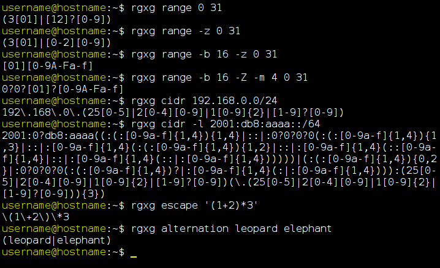

rgxg
rgxg (ReGular eXpression Generator) is a C library and a
command-line tool that generate (extended) regular expressions.
What does it do?
rgxg can be useful for generating expressions that match, for
example, a specific number range (e.g. 0 to 31 or 00 to FF) or all
addresses in a CIDR block (e.g. 192.168.0.0/24 or
2001:db8:aaaa::/64).

Get rgxg
Downstreams
rgxg is included in the following distributions. Please use the corresponding command to install rgxg.
Please open an issue at the rgxg.github.io repository on GitHub if rgxg is included in your distribution but not listed above.
Source
Both the
tarball releases and the
tags of the git repository are signed by the PGP key of
Hannes von Haugwitz.
The current public key is:
pub 4096R/68E7B931 2011-06-28 [expires: 2021-06-27]
Key fingerprint = 2BBB D30F AAB2 9B32 53BC FBA6 F694 7DAB 68E7 B931
uid Hannes von Haugwitz <hannes@vonhaugwitz.com>
The key can be downloaded from one of the well known PGP key servers.
Please
always verify the signature of a release before using it (see below).
Source tarballs
The source code of the current version can be downloaded
here.
Use the following command to verify the signature of the downloaded source tarball (see
README file for details):
gpg --verify rgxg-<VERSION_NUMBER>.tar.gz.asc
GIT
The rgxg git repository is hosted on
GitHub.
Use the following command to verify the signature of a git tag (see
README file for details):
git verify-tag v<VERSION_NUMBER>
License
rgxg is licensed under zlib/libpng License.
Bug reports / feature requests
Before reporting, please make sure that the bug still exists in the current GIT version of rgxg.
Please report bugs and feature requests to the
rgxg issue tracker on GitHub.
Who's behind rgxg?
rgxg is written and maintained by
Hannes von Haugwitz.
For the mail address please see the
AUTHORS file.
Last Update: 10 Jan 2020